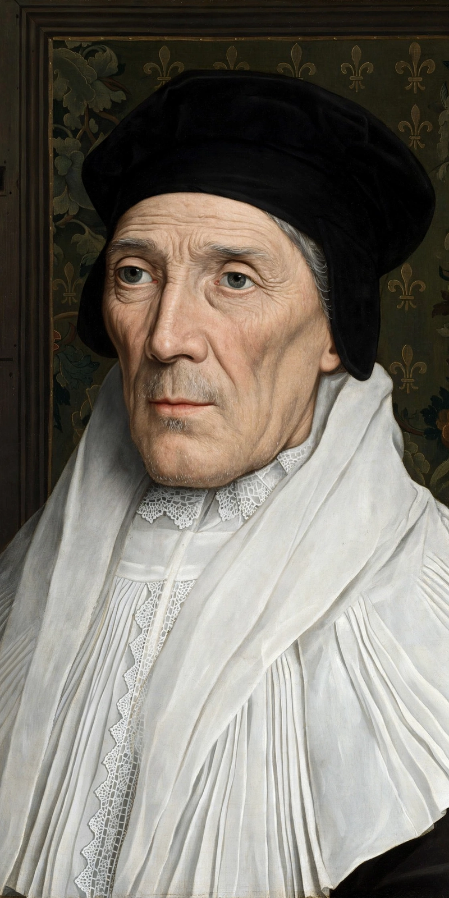

From Wikipedia, the free encyclopedia
| Saint John Fisher | |
|---|---|
 John Fisher, Bishop of Rochester | |
| Born | c. 19 October 1469, Beverley, Yorkshire, England |
| Died | 22 June 1535 (aged 65), Tower Hill, London |
| Occupation | Bishop of Rochester; Chancellor of the University of Cambridge |
| Canonised | 19 May 1935, by Pope Pius XI |
| Feast | 22 June (with Thomas More) |
John Fisher (c. 1469 – 22 June 1535) was an English Catholic bishop and theologian. He was Bishop of Rochester for close to three decades and Chancellor of the University of Cambridge, where he promoted Renaissance humanism and the study of Greek and Hebrew. Fisher was executed by order of Henry VIII during the English Reformation for refusing to accept him as supreme head of the Church of England. He was canonised by Pope Pius XI in 1935, alongside his fellow martyr Thomas More.
Fisher was born in Beverley, the son of a prosperous mercer. He studied at the University of Cambridge, graduating from Michaelhouse, and was ordained a priest in 1491. He became confessor and chaplain to Lady Margaret Beaufort, mother of Henry VII, and guided her foundations of Christ's College and St John's College, Cambridge. He encouraged Desiderius Erasmus's visits to Cambridge and the introduction of Greek scholarship.
Consecrated Bishop of Rochester in 1504, Fisher kept England's smallest and poorest see for his whole career while serving as Cambridge's chancellor for life. He preached the funeral sermons for Henry VII and Lady Margaret in 1509. A respected preacher and scholar, he wrote extensively against Martin Luther and in defence of the sacraments and the papal primacy during the early Reformation.
Fisher was the most determined clerical opponent of Henry VIII's campaign to annul his marriage to Catherine of Aragon, acting as her counsel at the legatine trial of 1529 and declaring he was prepared to die for the indissolubility of marriage, comparing himself to John the Baptist. His sermons and books made him a marked man: an attempt was made on his life in 1531 when poison was introduced into his household's food, killing two of his servants.
In 1534 Fisher refused the Oath of Succession and was imprisoned in the Tower of London. In May 1535 Pope Paul III created the imprisoned bishop a cardinal; Henry forbade the cardinal's hat to enter England, remarking that Fisher would wear it on his shoulders, "for head he shall have none." Tried for treason for denying the royal supremacy, Fisher was beheaded on Tower Hill on 22 June 1535, a fortnight before More. His headless body was buried in the churchyard of St Peter ad Vincula.
Fisher and More were canonised together in 1935 and share the feast day of 22 June in the Catholic calendar. Numerous schools and the Cambridge chaplaincy bear Fisher's name; Fisher House in Cambridge preserves his memory among Catholic students.